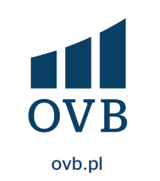

OVB - Promocja 10% !!! dla "NSZZ SOLIDARNOŚĆ"
Główna siedziba polskiej Centrali spółki znajduje się od 1992 roku w Warszawie. Wraz z założeniem OVB w Niemczech w 1970 roku rozpoczęła się historia sukcesu, która pozwala nam dziś zakwalifikować nas do wiodących firm pośrednictwa finansowego w Europie.
Nasza działalność koncentruje się na długoterminowym, przekrojowym i przede wszystkim zorientowanym na Klienta doradztwie finansowym prywatnych gospodarstw domowych. Dzięki naszej współpracy z ponad 100 wiodącymi na rynku partnerami produktowymi zapewniamy naszym Klientom najwyższej klasy rozwiązania finansowe dostosowane do ich indywidualnych potrzeb.
Podstawą naszego doradztwa jest gruntowna analiza sytuacji finansowej naszych klientów. W osobistej rozmowie pytamy w szczególności o aktualne cele i życzenia i na ich podstawie opracowujemy indywidualne rozwiązania finansowe. Nasi Doradcy zwykle towarzyszą swoim klientom przez wiele lat i dostosowują swoje decyzje finansowe do odpowiedniej sytuacji życiowej. Rezultatem są zawsze indywidualne koncepcje oparte na konkretnych potrzebach.